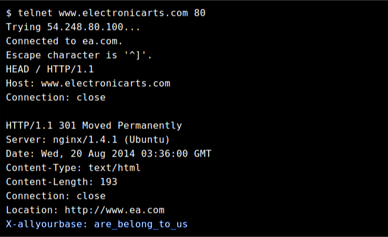

X-allyourbase: are_belong_to_us
easter-egg in www.electronicarts.com web-site
by Charles Iliya Krempeaux at

X-allyourbase: are_belong_to_us.
Which is a reference to the “All your base are belong to us” Internet meme.
Which is itself a reference to a poorly translated phrase from the opening cutscene of the Japanese video game Zero Wing.